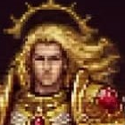

Düşmüş Işık
Bölüm I — Uyanış
Oyuna Başla
WASD
Hareket
Sol Tık
Kılıç
Sağ Tık
Kutsal Ateş
Boşluk
Kanat Atılışı
Sol taraf: Hareket
Sağ tuşlar: Kılıç · Ateş · Atılış
En iyi deneyim için telefonu yan çevir
Düşmüş Işık
Bölüm I — Uyanış

▼
Kanlı Bekçi
Geç ▸▸
♪
⛶
⚔
✹
➶
Düştün
Ama ışık henüz sönmedi...
Yeniden Doğ
Bölüm I Sonu
Devam edecek...
Tekrar Oyna
Duraklatıldı
Devam Et